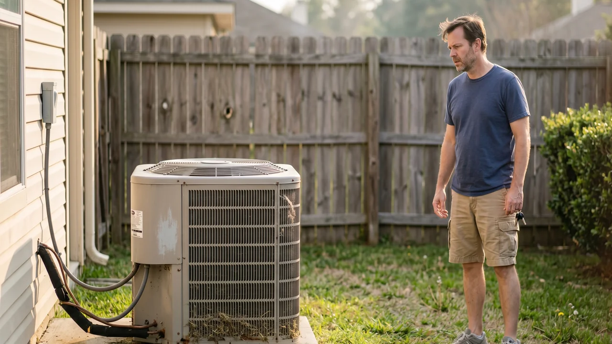

Advertising Disclosure: This site may receive compensation for service connections made through this page. Content is editorially independent.
You hear a rhythmic clicking from the outdoor AC unit but the fan does not spin and no cold air comes through the vents. The click is the contactor — a 240-volt relay inside the cabinet — closing to call for power that is never delivered. Set the thermostat to OFF right now; every click cycle stresses a compressor that is already straining. The fix is one of: a failed dual-run capacitor, pitted contactor contacts, a seized compressor, loose wiring at the disconnect, or a failing contactor coil. Every one of those is a technician repair. Do not open the outdoor cabinet, do not touch the capacitor (it holds a lethal charge for minutes after the breaker is off), and do not try to kill the power by going to your service panel to flip the breaker to reset anything. Call a technician — the longer the clicking continues, the closer you get to a $2,500 compressor replacement.
The AC contactor sits inside the outdoor condenser cabinet next to the dual-run capacitor. Both operate at 240 volts, and the capacitor holds a lethal electrical charge for several minutes even after the breaker is off. A homeowner who opens the cabinet to "check" the contactor is one accidental touch away from a cardiac-arrest-grade shock. The safest action is to set the thermostat to OFF and call a qualified HVAC technician. Do not kill the power by going to your service panel to flip the breaker yourself, do not operate the outdoor disconnect, do not remove the access panel, and do not touch the contactor, capacitor, wiring, or fan blade. Refrigerant-side diagnosis (if the compressor turns out to be the failure point) is federally regulated under EPA Section 608 and certification is legally required.
What the Clicking Sound Actually Means
When your thermostat calls for cooling, it sends a 24-volt signal down the control wire to the outdoor condenser. Inside the condenser cabinet, a small electromagnetic coil energizes and pulls a plunger closed. That plunger is the contactor, and the click you hear is the plunger snapping into its seated position. When the contactor closes, it is supposed to complete the 240-volt circuit that powers the compressor motor and the condenser fan motor.
If you hear the click but the fan does not spin and the house does not cool, the contactor is closing but something downstream is refusing to run. The question is what. That answer determines whether the fix is a $200 capacitor or a $3,500 compressor — and only a technician with a multimeter at the outdoor cabinet can tell you which.
The 5 Causes of a Clicking Contactor with No Start
1. Failed Dual-Run Capacitor (Most Common)
The dual-run capacitor is a small cylindrical component that stores and releases the burst of energy the compressor motor and the fan motor need to start. When the contactor closes, both motors demand that boost; without a healthy capacitor, neither can generate enough torque to turn. The contactor sits there closed, line voltage is present, but nothing spins. A failing capacitor is the single most common technician finding on this symptom — roughly half of "clicking but nothing happens" calls are a $150 to $400 capacitor repair. For the related pattern where the outdoor unit buzzes without spinning, see our guide on AC compressor buzzing, fan not spinning.
2. Pitted or Burnt Contactor Contacts
The physical contact points inside the contactor carry 40+ amps every time the AC starts. Over years, those contacts arc, pit, and oxidize — eventually to the point where the plunger closes but the electrical path is broken by the pitting. The click is loud because the coil is still pulling the plunger firmly down, but the contact points can no longer conduct current. Replacement contactors run $100 to $300 with the service call. Replacement is quick for a technician because they work with the capacitor safely drained and the disconnect pulled — not a homeowner task.
3. Seized or Thermally-Overloaded Compressor
If the contactor is closing and delivering line voltage but the compressor still does not start, the compressor itself may be seized or its thermal overload may have tripped. A thermally overloaded compressor has shut itself off internally to protect from damage; it will reset when it cools, but if the underlying cause (refrigerant, airflow, or mechanical) is not fixed, it trips again. A seized compressor draws locked-rotor amps every time the contactor closes — which you hear as the click, often followed by a brief hum as the compressor tries and fails to start. Each failed start damages the windings further. Compressor replacement is $1,200 to $3,500.
4. Low Incoming Voltage or Loose Disconnect
The 240V line power runs from your service panel, through the outdoor disconnect box mounted on the wall near the condenser, and into the cabinet. A loose lug at the disconnect, a failing utility transformer, or a brownout during a heat wave can drop the supply voltage below the threshold needed to start the compressor — the contactor closes, but the motors cannot pull in at reduced voltage. A technician measures voltage at the disconnect during a start attempt to catch this; the fix depends on whether the problem is in the house (loose lug, failing breaker) or on the utility side (voltage sag).
5. Failing Contactor Coil
The 24-volt coil that pulls the plunger closed can itself fail. As the coil winding degrades, it still pulls the plunger weakly — enough to produce a click but not enough to seat it firmly. The result: rapid, rhythmic clicking as the plunger bounces in and out of contact. This is a technician diagnosis with a 24V voltmeter at the contactor coil terminals. Replacement contactor with a new coil is the standard fix.
Get connected with a technician in your ZIP code.
Call Now — (844) 582-1795Disclosure: We are a referral service and may receive compensation for qualified calls. Calls may be routed to an independent provider network and may be recorded. Pricing and availability vary by provider and location.
What You Can Safely Do Before Calling
The safe-homeowner list on this symptom is essentially one item: stop the clicking by turning off the call-for-cool. Every click that leads to a failed start stresses the compressor windings.
- Set the thermostat to OFF immediately. This stops the contactor from trying to energize a doomed start attempt. No electrical work involved, no approach to the outdoor unit. This is the single most valuable action you can take.
- Confirm the air filter is not severely clogged. A filter swap is the only inside-the-house action that is even tangentially relevant to this symptom. A heavily restricted filter can cause the thermostat to stay in a continuous call-for-cool state, which prolongs the clicking.
- Note what you heard and share it with the technician. A rhythmic click-click-click every 30 seconds? A single loud click followed by silence? A click-then-hum-then-silence? That detail helps the technician arrive with the right parts. Do not approach the outdoor unit to listen more closely — stand well back, ideally describe it from inside the house.
- Call a qualified HVAC technician. This is the resolution step. The technician will shut off power at the outdoor disconnect, safely drain the capacitor, measure voltage at the contactor terminals, and identify whether the failure is the capacitor, the contactor, the compressor, or the supply wiring.
Do NOT attempt any of the following — every one carries an electrocution, fire, or compressor-damage risk:
- Open the service panel, or flip the AC breaker trying to reset the clicking
- Touch or operate the outdoor disconnect box
- Remove the access panel or top grille on the outdoor unit
- Approach the unit to listen up close while it is trying to start
- Push the contactor plunger closed with a screwdriver or stick (a genuinely dangerous "workaround" that still circulates in old YouTube videos)
- Handle the capacitor at all — capacitors hold a lethal charge for minutes after the breaker is off and must be drained with an insulated tool by a trained technician
- Use any electrical measurement tool on HVAC components yourself
- Bypass or jump any electrical component, contactor, or safety switch
- Spray water on the unit or try to clean the contactor
When to Stop and Call a Professional
The short answer: immediately. Any time you hear rhythmic clicking from the outdoor unit without a start, call a technician. Specific red flags that make this even more urgent:
- The clicking is accompanied by a brief hum each cycle. Classic failing-capacitor or seized-compressor pattern.
- The outdoor unit smells hot or there is a burning electrical smell. The contactor coil may be overheating.
- You see smoke or visible scorching on or around the outdoor cabinet. Shut off the AC at the thermostat, call 911 if there is smoke, and then call a technician.
- The clicking started after an ant or pest infestation near the outdoor unit. Insect invasion of the contactor is common in the Southeast — covered in the FAQ below.
- The system is older than 12 years and this is the second or third "clicking but not starting" event this summer. Compounding failures are common at that age.
- You have infants, elderly family members, or anyone with a heart or lung condition in the house and temperatures are climbing into the 80s. Relocate them to a cooler space while the technician is dispatched.
For the full map of every AC failure mode and how they connect, see our complete AC troubleshooting guide. If the AC stops clicking and instead the breaker trips, read AC breaker keeps tripping? Why you shouldn't keep resetting. If the outdoor unit buzzes louder than a click and the fan stays still, see AC compressor buzzing, fan not spinning. For the cost-side of the decision (is this 12-year-old system worth fixing?), read our honest 2026 HVAC cost guide.
What a Technician Will Actually Check
A thorough diagnosis on a clicking contactor covers the entire electrical chain from the thermostat to the compressor. Ask the technician to confirm each step:
- 24V at the contactor coil terminals. Confirms the thermostat signal is reaching the coil and the coil is receiving the correct control voltage.
- 240V at the contactor line terminals. Confirms the disconnect and service panel are delivering line voltage on both legs.
- 240V at the contactor load terminals during a closed cycle. If voltage is present on the line side but not on the load side during a click, the contact points are burnt through — contactor replacement.
- Capacitor microfarad reading. The technician's multimeter in capacitance mode reads the capacitor after it has been safely drained. More than 10% below rated capacitance is a replace.
- Compressor amp draw on start attempt. A clamp meter on the compressor lead shows whether the compressor is pulling locked-rotor amps (seized or marginal) or refusing to draw at all (internal open).
- Visual inspection inside the contactor housing. Ants, pitting, corrosion, and scorched wiring are all visible with the access panel removed and the capacitor drained.
A technician who skips straight to "you need a new compressor" without showing you contactor voltage readings and capacitor microfarads is guessing. Ask for the measurements.
What Repairs Cost in 2026
Pricing on this site is anchored to our complete 2026 HVAC Cost Guide, which is the single source of truth for every cost figure — no drift between articles.
- Diagnostic / service call: $65–$150 (often credited toward the repair if approved)
- Capacitor replacement: $150–$400
- Contactor replacement: $100–$300
- Hard-start kit installation: $150–$350 (extends life of a marginal compressor)
- Loose disconnect / wiring repair: $100–$300
- Compressor replacement: $1,200–$3,500
- Emergency / after-hours surcharge: $100–$300 added
Estimated ranges based on publicly available industry data and in sync with our complete cost guide. Actual costs vary by region, provider, and system.
Climate Matters: Where This Shows Up Most
Hot-humid climates (Brownsville, Gulfport, the Gulf Coast): Contactor failure is accelerated by fire-ant intrusion — small ants are attracted to the electromagnetic field of energized contactor coils and sometimes nest inside the contactor housing. Annual professional cabinet inspection (part of a standard tune-up) catches this before it causes a failure. Capacitor degradation is also faster in sustained heat, so annual capacitor microfarad testing pays off.
Hot-dry climates (Laredo, Phoenix, Las Vegas): Voltage sag during heat-wave afternoons is more common — utilities strained by maximum AC demand can deliver supply voltage slightly below 240V, which drops contactor performance into marginal territory. Whole-home surge protection at the service panel (a qualified electrician's job) helps protect the control board and contactor coil from voltage spikes when power returns after an outage.
Mixed-humid climates (Charleston, Atlanta, Nashville): The shoulder-season pattern shows up here — a system that ran fine in May develops the clicking on the first 92°F afternoon in June as the marginal capacitor or contactor is finally pushed past its limit. Pre-summer tune-ups are highest-value in these climates. Browse local service providers in Texas, Mississippi, or explore all service areas.
Trusted Industry Sources
The guidance in this article is consistent with published recommendations from:
- U.S. Department of Energy — Central Air Conditioning
- EPA Section 608 — Refrigerant Handling Regulations
- NFPA 70 — National Electrical Code
- ENERGY STAR Heating & Cooling
Don't wait — get a technician dispatched to your area.
Call Now — (844) 582-1795Disclosure: We are a referral service and may receive compensation for qualified calls. Calls may be routed to an independent provider network and may be recorded. Pricing and availability vary by provider and location.
Frequently Asked Questions
The contactor is an electrically controlled switch (a relay) inside the outdoor condenser unit that bridges 240-volt line power to the compressor and fan motor when the thermostat calls for cooling. A small 24-volt signal from the thermostat energizes the contactor coil, which pulls a plunger closed and completes the high-voltage circuit. The click you hear is the plunger snapping into place. A contactor that clicks but does not close completely — or closes but does not deliver power — is the component at fault, or the components downstream (capacitor, compressor) have failed.
Five common causes, in order of frequency: a failed dual-run capacitor (the contactor closes but the compressor and fan cannot start without the capacitor's boost), pitted or burnt contactor contacts (the plunger closes but the electrical path is interrupted), a seized or thermally-overloaded compressor (the contactor supplies power but the compressor refuses to turn), low incoming voltage or a loose lug in the disconnect, and finally a failed contactor coil itself (the clicking you hear is the coil's last gasps). All five require a technician with a multimeter at the outdoor cabinet.
No. Every time the contactor closes and the compressor tries to start under a weak capacitor or seized bearing, the compressor draws locked-rotor amps — 4 to 6 times its running current. Sustained locked-rotor conditions overheat the compressor windings and can destroy an otherwise-repairable system. Set the thermostat to OFF immediately and call a technician. A $200 capacitor repair becomes a $2,500 compressor replacement if you let the clicking continue for hours.
No. The contactor sits inside the outdoor condenser cabinet alongside the dual-run capacitor, which stores a lethal electrical charge for several minutes after the breaker is off. Line voltage in that cabinet is 240V, and a misaligned wire on a new contactor causes immediate short-circuit damage to the control board and the compressor. A technician safely drains the capacitor, tests contactor voltage with a multimeter, and installs the correct replacement (they are not universal — amperage rating, pole count, and coil voltage all matter). This is firmly technician territory.
Yes, and it is a surprisingly common failure mode. Fire ants and small insects are attracted to the magnetic field around energized contactor coils and sometimes nest inside the contactor housing. Their bodies dry onto the contact points between closings, creating a resistance path that prevents the contactor from completing the circuit — the plunger closes, but no power flows. A technician finds this immediately on inspection. It is more common in the Gulf states and the Southeast. Annual outdoor-unit tune-ups catch the problem before it causes a failure.
Expect a diagnostic fee of $65 to $150. If the cause is a failed capacitor, replacement runs $150 to $400 including the service call. Contactor replacement is $100 to $300. A hard-start kit to coax a marginal compressor into starting is $150 to $350. If the compressor itself has seized, replacement is $1,200 to $3,500 and on older systems can push the decision toward full system replacement. See our full HVAC Cost Guide for the complete 2026 pricing breakdown.
Local HVAC Service Areas
Cool Call Pro connects homeowners with independent HVAC technicians nationwide. Find a pro in Brownsville (TX), Gulfport (MS), Laredo (TX), or Charleston (SC), or browse by state: Texas, Mississippi, or all locations.